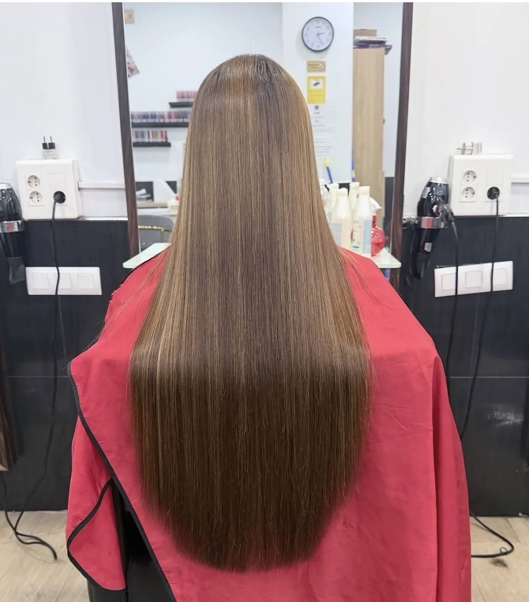

Hola! Hoy he ido a realizarme el alisado japonés en la peluquería Kisna… La verdad llevo mucho tiempo buscando una buena peluquería que ofrezca un verdadero alisado, ya que anteriormente me lo he realizado dos veces y me decían que para mantener el alisado debía secarme el pelo con calor cada que me duche, aparte de ser caro no solucionaba mi problema. Yo llevo haciendome la plancha muchos años y cuidandome excesivamente el pelo para que no se resienta tanto (ya que para ahorrar tiempo lo planchaba con dos planchas a la vez)… He salido de la peluquería muy contenta, después de aplicarme el alisado se me lavó el cabello y se me secó sin usar peine y quedo realmente liso como lo estaba deseando, también me cortaron el cabello y lo sanearon. He estado muy contenta y comoda mientras me atendieron, llegue a las 16:10 y sali a las 21:15, mientras estuve ahí me ofrecieron chucherías y bebida, muy atentos a que no me falte de nada, y así con todos los clientes que habían en el local. Vengo desde estepona y sin duda volveré a visitar esta peluquería cuando me haga falta el retoque ❤️
Leer comentario completo
Hola! Hoy he ido a realizarme el alisado japonés en la peluquería Kisna… La verdad llevo mucho tiempo buscando una buena peluquería que ofrezca un verdadero alisado, ya que anteriormente me lo he realizado dos veces y me decían que para mantener el alisado debía secarme el pelo con calor cada que me duche, aparte de ser caro no solucionaba mi problema. Yo llevo haciendome la plancha muchos años y cuidandome excesivamente el pelo para que no se resienta tanto (ya que para ahorrar tiempo lo planchaba con dos planchas a la vez)… He salido de la peluquería muy contenta, después de aplicarme el alisado se me lavó el cabello y se me secó sin usar peine y quedo realmente liso como lo estaba deseando, también me cortaron el cabello y lo sanearon. He estado muy contenta y comoda mientras me atendieron, llegue a las 16:10 y sali a las 21:15, mientras estuve ahí me ofrecieron chucherías y bebida, muy atentos a que no me falte de nada, y así con todos los clientes que habían en el local. Vengo desde estepona y sin duda volveré a visitar esta peluquería cuando me haga falta el retoque ❤️